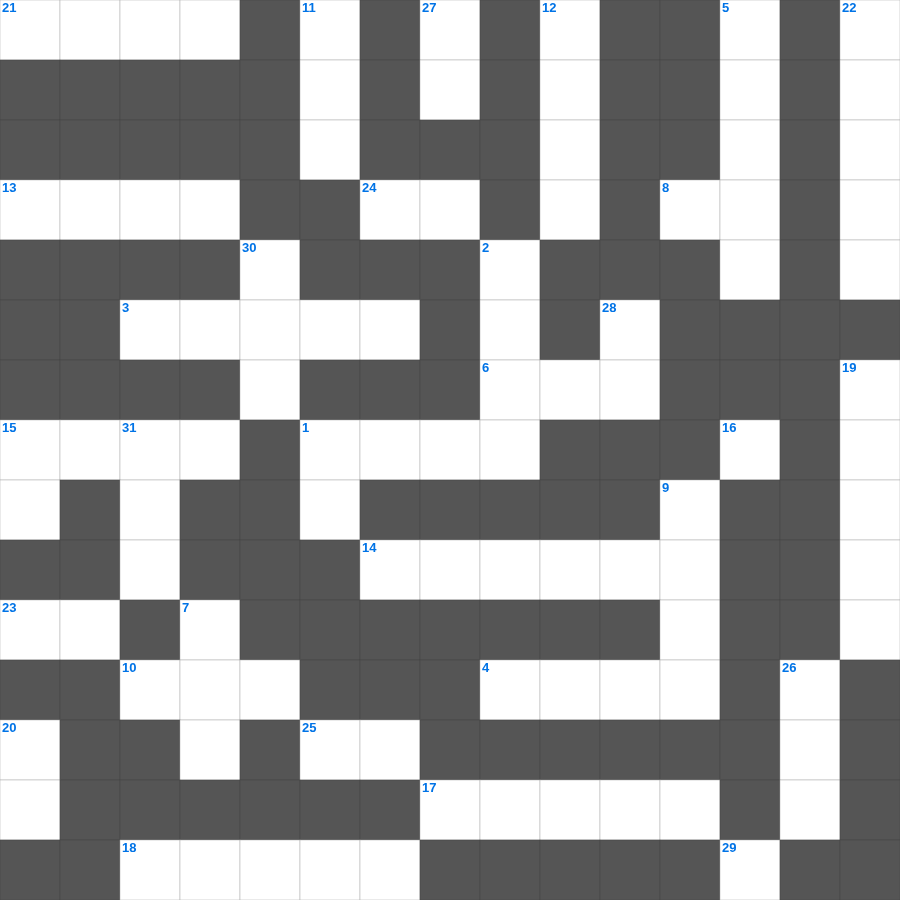

에스겔: 마른 뼈의 환상
📌 서비스 정의
십자가로세로는 교회 주보와 주일학교에서 사용할 수 있는 성경 기반 가로세로 퍼즐 서비스입니다. 성경 인물, 사건, 핵심 구절을 바탕으로 제작되었습니다. 온라인 풀이 및 인쇄 기능을 제공합니다.
에스겔를 주제로 한 에스겔 주일학교 퀴즈입니다. 35개의 단어를 맞춰보세요! 가로세로 낱말 퍼즐 형식으로 에스겔의 핵심 내용을 재미있게 복습할 수 있습니다.

📝 가로 힌트
1. 범사에 이것하라 이는 그리스도 예수 안에서 너희를 향하신 하나님의 뜻이니라
3. 아브라함의 고향
4. 하나님이 만드신 최초의 낙원
6. 이스라엘의 유일한 여성 사사
8. 예수님이 십자가에서 돌아가신 사건
10. 성막 가장 안쪽, 하나님의 임재 상징
10. 여호수아가 요단강을 건널 때 앞세운 것
13. 빌라도가 군중의 요구에 예수님을 넘겨주고 한 행동
14. 성전 낙성식 때 솔로몬이 드린 제물 수
15. 다윗 왕조의 수도, 평화의 도시
16. 낮을 주관하게 하신 큰 광명체
17. 대제사장의 판결 흉패 안에 있던 두 돌
18. 구하라 그리하면 너희에게 이것을 주실 것이요
21. 기름 부음 받은 자
23. 너를 위하여 새긴 이것을 만들지 말고
24. 성막 내부를 덮는 휘장의 색깔(청색, 자색, 이것)
25. 마음이 이것한 자는 하나님을 볼 것임
29. 오직 정의를 이것 같이 흐르게 할지어다
📝 세로 힌트
1. 요셉이 보디발의 아내 유혹을 물리치고 간 곳
2. 바울이 복음을 전하다가 돌에 맞은 곳
5. 기브온 족속이 여호수아를 속이려 가져온 것
7. 하나님의 법궤를 보관하던 상자
7. 무지개를 통해 주신 하나님의 약속
9. 아브라함이 이삭을 번제로 드리려 한 산
11. 니고데모와 예수님의 대화 주제
12. 다윗이 사울을 죽일 기회에 옷자락만 베었음
15. 하나님의 뜻을 전달하는 것
19. 떨기나무 불꽃 가운데서 모세가 들은 음성
20. 밤이 없겠고 등불과 이것이 쓸데없으니
22. 히스기야 왕의 수명이 15년 연장됨
26. 나는 알파와 이것이요
27. 모든 것 위에 믿음의 이것을 가지고
28. 쓴 물이 단물로 변한 곳
30. 솔로몬 성전의 두 기둥 이름 중 다른 하나
31. 아론의 지팡이에서 핀 꽃
🧑🏫 교회 교육 자료 활용
이 퍼즐은 주일학교 교재 추천 자료로 활용할 수 있고, 주일학교 주보에 넣기 좋은 분량으로 구성되어 있습니다. 수업용 주일학교 교안에 활동지로 붙이거나, 예배 후 복습용 주일학교 공과교재로 바로 사용할 수 있습니다.
🏷️ 키워드
에스겔 주일학교 퀴즈, 에스겔, 십자가로세로, 성경퀴즈, 말씀퀴즈, 가로세로퍼즐, 주일학교 교재 추천, 주일학교 주보, 주일학교 교안, 주일학교 공과교재